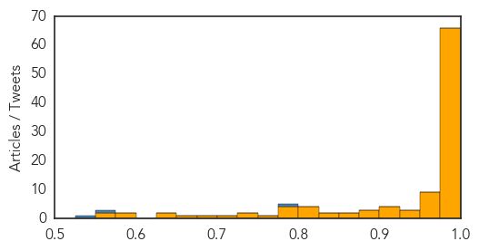
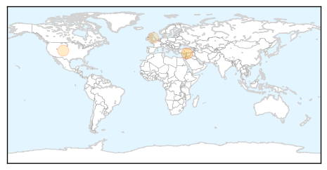

Ebola
30-Day Web Trend
30-Day Twitter Trend
0 alerts, 0 warnings

Article Locations
Article Confidences
Top Articles:
- 1.000
- WHO meeting chooses untried interventions to defeat Ebola
- 1.000
- Ebola virus in the semen of convalescent men
- 1.000
- Assessment of the potential for international dissemination of Ebola virus via commercial air travel during the 2014 west African outbreak
- 1.000
- US looking past Ebola to prepare for next outbreak
- 1.000
- the edge of knowledge
- 1.000
- More Cases Surface In Mali While Guinea, Sierre Leone And Liberia Still Suffer
- 1.000
- HEALTHBEAT: US seeks to shore up world's blind spots in preparation for next disease outbreak
- 1.000
- Progress Seen in Ebola Epidemic
- 1.000
- U.S. health care worker has Ebola
- 1.000
- U.S. Ebola patient dies
- 1.000
- Global Research - Centre for Research on Globalization
- 1.000
- Ebola 'stable' in Guinea
- 1.000
- 2 Children Test Negative For Ebola Virus at Nationwide Children's Hospital
- 1.000
- Even before Ebola contained, U.S. looks to next health crisis
- 1.000
- Ebola Survivor Leaves French Hospital
- 1.000
- US looking past Ebola to prepare for next outbreak
- 1.000
- US Looking Past Ebola to Prepare for Next Outbreak
- 1.000
- Ebola Crisis Now 'Stable' In Guinea, WHO Says
- 0.999
- New Ebola case in Mali two more suspected
- 0.999
- We can end Ebola in 2015 - Ban Ki-moon
- 0.999
- Ebola infection count exceeds 15,300
- 0.999
- 2 children test negative for Ebola in Columbus - Cleveland 19 News
- 0.999
- Journey through the Ebola heartland in Sierra Leone and Guinea
- 0.998
- Cuban Doctor in Stable, But Serious Condition After Contracting Deadly Disease
- 0.998
- Health officials have monitored 5 West Africa travelers in Utah
- 0.998
- Two Children In United States Being Monitored For Ebola Virus; 'They Are Being Kept In Isolation'
- 0.997
- Sisters in Ohio hospital over Ebola fears after Sierra Leone trip
- 0.996
- 2 children being tested for possible Ebola in Ohio
- 0.996
- Outbreak of the plague in Madagascar leaves dozens dead
- 0.996
- Outbreak of the plague in Madagascar leaves dozens dead
- 0.996
- MERS and bird flu update
- 0.995
- Ohio Spreading In The U.S.? Two Children Being Tested For Possible Ebola Infection In Ohio
- 0.995
- Cuban doctor with Ebola in stable yet worrying condition
- 0.995
- Ghanaian Leads Successful Community Forum on Ebola
- 0.995
- New Ebola case confirmed, two more suspected in Mali
- 0.994
- 2 Columbus, Ohio, Children Tested For Ebola After Showing Symptoms
- 0.994
- Sierra Leone still struggling with Ebola
- 0.994
- UPDATE 2-Traveler from Mali tested for Ebola at New York hospital
- 0.993
- Fund the emergency response for Ebola
- 0.992
- Cuban doctor arrives in Geneva for Ebola treatment
- 0.992
- U.N. worker leaves French hospital after Ebola recovery
- 0.991
- Brave Welsh doctor flies to ebola-hit Sierra Leone to fight 'biggest medical disaster' in his lifetime
- 0.991
- Jeff Co. patient cleared for Ebola, now discharged
- 0.991
- Two Children Being Tested for Possible Ebola in Ohio
- 0.990
- Ontario invests $3M in Ebola fight
- 0.990
- Sudan Vision Daily
- 0.990
- 2 Children Test Negative for Ebola in Ohio
- 0.987
- U.S. Military Robots To Join Fight Against Ebola
- 0.987
- China’s diverse assistance to Africa produces real results on the ground
- 0.987
- Ebola Outbreak: Are Air Carriers Liable?
Showing top 50 articles...
Top Tweets:
- 0.793
- RT: SierraLeone records 435 new confirmed Ebola cases and 110 confirmed deaths this week.
- 0.551
- Cuban doctor with Ebola virus in stable condition Swiss hospital says http://t.co/qwZomZMHML
- 0.540
- What do you think affected communities in West Africa can do to fight Ebola?
Measles
30-Day Web Trend
30-Day Twitter Trend
0 alerts, 0 warnings

Article Locations
Article Confidences
Top Articles:
Top Tweets:
-
No tweets found for Nov 23, 2014